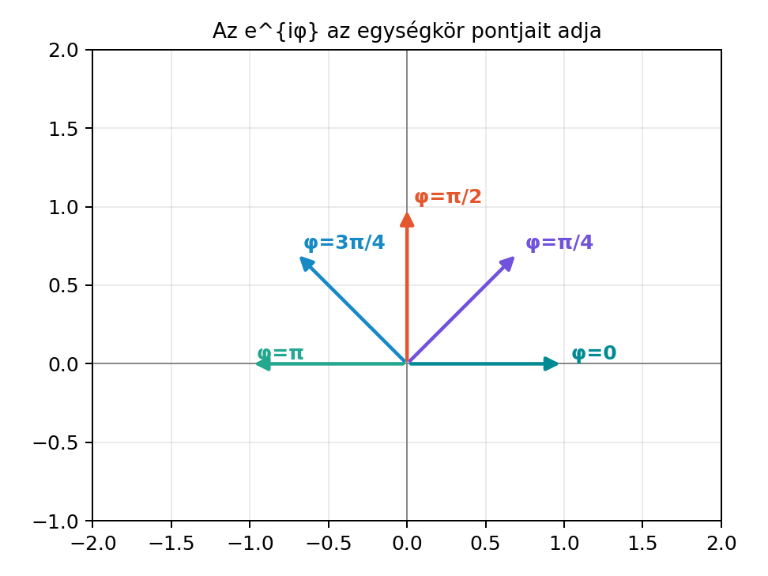

19.3 Az exponenciális függvény
hatványsora és az Euler-formula
19.3.1 Motiváció
Az exponenciális függvényt a korábbi fejezetekben valós kitevőre
értelmeztük, például a kamatos kamat, a radioaktív bomlás és a hűlő kávé
modelljeiben. A mérnöki és fizikai gyakorlatban azonban gyakran olyan
kifejezések bukkannak fel, mint
vagy
,
ahol a kitevőben komplex szám áll. A Hatványozás és
gyökvonás: Moivre-formula és egységgyökök alfejezetben már
használtuk az
jelölést mint rövidítést, de ott nem definiáltuk pontosan: most ezt a
hiányt pótoljuk. A cél, hogy a komplex kitevős exponenciális függvényt
úgy értelmezzük, hogy a megszokott azonosságok – például a
függvényegyenlet és a hatványsoros előállítás – érvényben maradjanak, és
közben megkapjuk a matematika egyik legszebb összefüggését, az
Euler-formulát, amely a trigonometrikus és exponenciális függvényeket
egyetlen formulában köti össze.
19.3.2 Szemléletes kép
Az Euler-formula, amelyet hamarosan bebizonyítunk, azt mondja,
hogy
Ez azt jelenti, hogy a komplex síkon az
pont egységnyi távolságra van az origótól, és a valós tengely pozitív
irányával
szöget zár be. Az alábbi ábra öt jellegzetes szöget mutat:

Az e^{iφ} az egységkör pontjait adja - A
vektorok hossza 1, a vízszintes tengely a valós, a függőleges a képzetes
rész. φ = 0, π/4, π/2, 3π/4 és π esetén rajzoltuk meg. A koordináták a
cos és sin értékek, π/4-nél 1/√2 ≈ 0,7071-re kerekítve.
Ha a
szög folyamatosan nő
-tól
-ig,
az
pont az origó körüli egységkört járja be az óramutató járásával
ellentétes irányban. Ez a kép alapozza meg a fázorok, a forgó vektorok
és a váltakozó áramú körök tárgyalását.
19.3.3 A komplex exponenciális
függvény definíciója
Ez a sor minden valós
-re
abszolút konvergens. A komplex változós általánosításhoz egyszerűen
megengedjük, hogy a változó komplex legyen:
Definíció. Tetszőleges
esetén legyen
A függvényt komplex exponenciális függvénynek nevezzük, és a
mellett az
jelölést is használjuk. A definícióban
a komplex algebrai hatványozást jelenti, azaz
,
.
A definíció jogosságához be kell látnunk, hogy a sor minden
komplex számra konvergens, sőt abszolút konvergens. Ehhez használjunk
hányadoskritériumot az abszolút értékek sorára. Legyen
.
Ekkor
hiszen rögzített
mellett a számlálóban
állandó, a nevező pedig minden határon túl nő. Mivel a hányados
határértéke
,
a Pozitív tagú sorok konvergenciakritériumai
alfejezetben tanult hányadoskritérium szerint a
sor konvergens, tehát a komplex sor abszolút konvergens. Abszolút
konvergens komplex sor pedig konvergens is.
Megjegyzés. Valós
esetén a definíció visszaadja a már ismert valós exponenciális
függvényt, tehát a jelölés konzisztens. A
jelölés különösen akkor hasznos, ha a kitevő hosszú kifejezés.
19.3.4 A függvényegyenlet
bizonyítása
Az exponenciális függvény legfontosabb tulajdonsága a
szorzatösszefüggés: a kitevők összeadódnak. Ezt most komplex változóra
is igazoljuk.
Tétel. Minden
esetén
Bizonyítás. Mindkét oldal abszolút konvergens sor,
így alkalmazhatjuk a Komplex tagú sorok és sorok
szorzása alfejezetben tanult eredményt: abszolút konvergens sorok
Cauchy-szorzata is abszolút konvergens, és összege a sorok összegének
szorzata. Írjuk fel a jobb oldali szorzatot a Cauchy-szorzattal:
A Cauchy-szorzat
-adik
tagja azoknak a szorzatoknak az összege, amelyekben a fokszámok összege
:
A szumma alatt a binomiális együttható áll:
.
Ezért a binomiális tétel szerint
A Cauchy-szorzat teljes összege tehát
ami éppen a bizonyítandó állítás. ∎
Következmény. A tételből azonnal adódik, hogy
,
minden
-re,
és így
minden
esetén. Továbbá minden
-re
.
19.3.5 Kapcsolat az
sorozattal
A valós esetben láttuk, hogy az
számot a
sorozat határértékeként is definiálhatjuk. A komplex exponenciális
definíciójának egyik fontos konzisztencia-tulajdonsága, hogy ez a
kapcsolat komplex változóra is átvihető.
Tétel. Minden
esetén
Bizonyítási vázlat. Rögzítsünk egy
komplex számot. A binomiális tétellel
Rögzített
mellett a
hányados
-hez
tart, amikor
,
hiszen a számláló és a nevező is
-adfokú
polinom
-ben,
azonos főegyütthatóval. Ezért a részletösszegek formálisan az
exponenciális sor részletösszegeihez tartanak. A pontos indokláshoz meg
kell mutatni, hogy a maradéktagok is kicsik maradnak; ez az abszolút
konvergenciából következik, hasonlóan a valós esethez. A teljes
bizonyítás meghaladja ennek az alfejezetnek a kereteit, de a
gondolatmenet a kulcslépést világosan mutatja: a binomiális tétel és a
hatványsoros definíció összekapcsolódik. ∎
Példa. Legyen
.
Akkor
,
és
(tiszta Python-számolás). A sorozat tehát lassan tart a
határértékhez, amint azt hamarosan az Euler-formulából látni fogjuk; a
lassúság oka, hogy
.
19.3.6 Az Euler-formula
levezetése
Most eljutunk az alfejezet központi eredményéhez.
Tétel (Euler-formula). Minden
esetén
Bizonyítás. Írjuk be az exponenciális sorba a
értéket:
A sor abszolút konvergens, ezért a tagjait tetszőlegesen
csoportosíthatjuk és rendezhetjük. Bontsuk szét az összeget páros és
páratlan indexű tagokra. Páros
esetén
,
páratlan
esetén pedig
.
Így
Következmény. Az Euler-formulából a
helyettesítéssel kapjuk, hogy
A két egyenlőség összeadásával és kivonásával a koszinusz és a
szinusz kifejezhető az exponenciális függvénnyel:
Ezeket a képleteket gyakran használjuk trigonometrikus azonosságok
bizonyítására és komplex analízisbeli integrálok kiszámítására.
Az Euler-azonosság. A formula egyik látványos
speciális esete
:
tehát
Ez az egyenlőség öt alapvető matematikai állandót
(,
,
,
,
)
kapcsol össze egyetlen képletben. Sok matematikus ezt a matematika egyik
legelegánsabb eredményének tartja.
alakban, ahol
és
az argumentum. Az Euler-formula birtokában ezt tömören így írhatjuk:
Ez a jelölés azért előnyös, mert a komplex szorzás
hossz szorzódik, szög összeadódik szabálya most egyszerűen
a kitevőben való összeadásból következik: ha
és
,
akkor
Ellenpélda. Ne gondoljuk, hogy a komplex
exponenciális értéke úgy viselkedik, mint a valós. Például
,
míg
.
A két szám abszolút értéke egyezik (mindkettő
,
mert
),
de a valós és a képzetes részük különbözik: a képzetes kitevő az
argumentumot, a valós kitevő az abszolút értéket határozza meg. Ez
rávilágít arra, hogy a komplex kitevős exponenciálisnál a képzetes rész
is lényeges.
19.3.9 Valós életbeli alkalmazás:
csillapodó rezgés komplex reprezentációja
A mechanikai rezgések és az elektromos váltakozó áramú körök
tárgyalásában a szinuszos jelek helyett célszerű komplex
exponenciálisokat használni, mert a deriválás és az összeadás
egyszerűbbé válik.
Modellfeladat. Tekintsünk egy csillapított rugós
rendszert. A test kitérését az idő függvényében a
képlet írja le, ahol
a kezdeti amplitúdó,
a csillapítási együttható,
a körfrekvencia,
pedig a kezdőfázis. Ez a kifejezés két valós függvény szorzata,
deriválása és integrálása körülményes. Vezessük be a komplex
kitérés-függvényt:
Az Euler-formula szerint ennek valós része éppen a fizikai
kitérés:
A komplex függvényben a csillapodó burkológörbe
egyértelműen elkülönül a forgó fázortól,
-tól.
Így a deriválás is könnyen látható: ha
alakú, ahol
,
akkor
ami azt mutatja, hogy a komplex amplitúdó differenciálegyenlete
lineáris. A fizikai kitérés deriváltja ennek a valós része, de a komplex
reprezentációban a fázis- és amplitúdóinformáció együtt kezelhető.
Konkrét számítás. Legyen
,
,
és
.
Határozzuk meg a kitérést
időpontban.
A komplex kitérés:
Először a valós burkolót számoljuk:
A fázis
.
Mivel
,
a fázis a
-t
levonva
-ot
ad, így
A fizikai kitérés:
Értelmezés és modellkorlát. Az eredmény azt mutatja,
hogy
másodperc alatt az amplitúdó a kezdeti
-ről
körülbelül
-re
csökkent, és a pillanatnyi fázis miatt a kitérés ennél valamivel kisebb.
A modell lineáris erőtörvényt és sebességgel arányos csillapítást
feltételez; nagy kitéréseknél nemlineáris hatások léphetnek fel, de kis
rezgéseknél ez a leírás jó közelítés. A komplex reprezentáció itt nem
csupán kényelem: a fáziseltolás és a csillapodás egyetlen komplex
kitevőben tömöríthető, ami a későbbi differenciálegyenletes tárgyalást
is előkészíti.
19.3.10 Tipikus hibák
Előjelhiba az Euler-azonosságban. Gyakori tévedés,
hogy
.
A helyes érték
,
tehát
.
Az előjel azért fontos, mert a koszinusz π-nél mínusz egy.
A komplex exponenciális valósnak tekintése. Sok
tanuló azt gondolja, hogy
valós szám, ha
komplex. Ez általában nem igaz:
tisztán képzetes. A helyes állítás az, hogy
modulusa
,
azaz
,
de maga a függvényérték általában komplex.
A valós és képzetes rész elhagyása. A
vagy
egyenlőségek hibásak. A helyes formulák
és
.
Az
-vel
való osztás és a konjugált tag elhagyása gyakori figyelmetlenség.
A sor abszolút konvergenciájának figyelmen kívül
hagyása. A függvényegyenlet bizonyításánál elengedhetetlen,
hogy a Cauchy-szorzat jogosságát az abszolút konvergencia garantálja.
Feltételesen konvergens soroknál a Cauchy-szorzat viselkedése lényegesen
bonyolultabb, ezért a komplex exponenciális esetében mindig ellenőrizni
kell az abszolút konvergenciát.
19.3.11 Önellenőrzés
Igaz-e, hogy
?
Indokold röviden.
Írd fel
algebrai alakját.
Melyik a helyes:
,
vagy
?
Fejezd ki
-et
és
segítségével.
Igaz-e, hogy
minden komplex
-re?
Milyen tétel garantálja?
19.3.12 Feladatok
1. feladat (A). Számítsd ki az alábbi komplex számok
algebrai alakját: (a)
;
(b)
;
(c)
.
2. feladat (A). Írd fel a
kifejezést
és
segítségével, majd bizonyítsd be a
azonosságot.
3. feladat (B). Bizonyítsd be az Euler-formulával,
hogy
.
4. feladat (B). Számítsd ki
algebrai alakját közelítőleg, és ellenőrizd az abszolút értékét.
5. feladat (C). Bizonyítsd be, hogy az exponenciális
függvény
-ben
periodikus
szerint: minden
-re
.
Miből következik ez?
6. feladat (D). Egy váltakozó áramú körben a
feszültség pillanatértéke
,
ahol
csúcsérték (nem a hálózati feszültség effektív értéke),
és
.
Írd fel a komplex feszültség-fázort, és határozd meg a pillanatértéket
időpontban. Ellenőrizd, hogy a komplex reprezentáció valós része
visszaadja-e az eredményt.
19.3.13 Megoldások
19.3.13.1 Önellenőrzés –
válaszok
Igen, mert
.
.
A helyes:
,
mert
.
.
Igen, minden komplex
-re
igaz; ez a függvényegyenlet, amelyet abszolút konvergens sorok
Cauchy-szorzatával bizonyítottunk.
19.3.13.2 1. feladat megoldása
.
.
.
Ellenőrzés: mindhárom vektor hossza
,
ami megegyezik
tulajdonsággal.
19.3.13.3 2. feladat megoldása
ezért
Csoportosítsuk az exponenciális tagokat:
A levezetésben használtuk, hogy
.
19.3.13.4 3. feladat megoldása
A szinusz és koszinusz exponenciális alakjával:
Kiszámolva:
A két törtet közös nevezőre hozva:
19.3.13.5 4. feladat megoldása
.
Az Euler-formulával:
Ezért
Ellenőrzés: az abszolút érték négyzete
.
A kapott algebrai alaknál
,
ami megegyezik az
értékkel.
19.3.13.6 5. feladat megoldása
Alkalmazzuk a függvényegyenletet:
Az Euler-formulából
.
Tehát
Ez minden
-re
igaz, tehát a komplex exponenciális függvény periodikus
szerint. A valós exponenciális nem periodikus, a komplex változó
képzetes része hozza be ezt az új tulajdonságot.
19.3.13.7 6. feladat megoldása
A feszültség komplex reprezentációja (fázor):
Itt
,
,
.
A pillanatérték a valós rész:
esetén:
A teljes fázis:
Ezért
A komplex reprezentációval számolva:
Ennek valós része ugyanaz, mint fent:
.
A negatív előjel azt jelenti, hogy a feszültség a választott pozitív
irányhoz képest éppen ellentétes polaritású ebben a pillanatban.
19.3.14 Rövid összefoglaló
A komplex exponenciális függvényt a
abszolút konvergens hatványsorral definiáltuk minden
-re.
A függvényegyenlet,
,
az abszolút konvergens sorok Cauchy-szorzatával és a binomiális tétellel
bizonyítható; következménye, hogy
minden
-re.
A
összefüggés a valós
szám definíciójának komplex általánosítása. Az Euler-formula szerint
,
ahonnan
,
és
.
A trigonometrikus alak tömören
alakban írható, és a komplex szorzás szabályai a kitevős alakban
egyszerűen kezelhetők.
A fejezet a klasszikus komplex analízis és valós analízis szokásos
eredményeire épít (például Laczkovich–T. Sós, Valós analízis;
Stewart, Calculus). A tankönyv jellegéből adódóan a levezetések
a stabil matematikai tudáson alapulnak, de a hivatkozott könyvek konkrét
kiadását, oldalszámát és tételszámát nem jelöltük meg; ezeket az olvasó
az adott tankönyv tartalomjegyzékében ellenőrizheti. Online forrásként
az openstax.org és a DLMF megfelelő fejezetei használhatók
tájékozódásra, de az itteni bizonyítások önálló, tankönyvi szintű
kidolgozások.